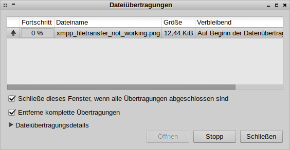

IPM Vortrag
BA Planung
(oder: "Warum hat eigentlich noch niemand das beste Chatprotokoll mit dem besten Filesharingprotokoll verknüpft?")
Jan Hartmann / 11083800
Problemstellung
XMPP: Extensible Messaging and Presence Protocol
("Jabber")
- erweiterbares Messagingprotokoll
- dezentral (Architektur ähnlich wie bei Email)
- offener Standard
- einfach um neue Funktionen zu erweitern
...Nachteil:
- für in-band Dateiübertragungen müssten Daten base64 Codiert werden
- out-of-band Übertragungen benötigen Proxy
(23:26:30) A: kannst du dich dran erinnern wann das letzte mal eine dateiübertragung per jabber geklappt hat?
(23:27:47) B: Nein^^
(23:28:14) Angebot zum Senden von xmpp_filetransfer_not_working.png an B
die Idee
- Dateien/Verzeichnisse freigeben
- Freigabelisten an alle Kontakte übermitteln
- als Empfänger: bekommene Dateilisten aggregieren, durchsuchbar machen
- wenn gewollt downloaden + selbst freigeben
"...könnte man da nicht BitTorrent benutzen?"
kann man. sogar recht elegant.
BitTorrent -> magnetlinks
XMPP -> PEP
(todo: eigentlich reichts wenn ich das sage. folie überflüssig.)Magnetlinks
...PEP
grafik: pep publish an server (statusnachricht)
Vorteile:
- benötigt wird nur die bestehende XMPP infrastruktur
- geteilt wird immer nur zwischen bekannten Kontakten, unbekannte IPs lassen sich blockieren
- kein Torrent Tracker nötig